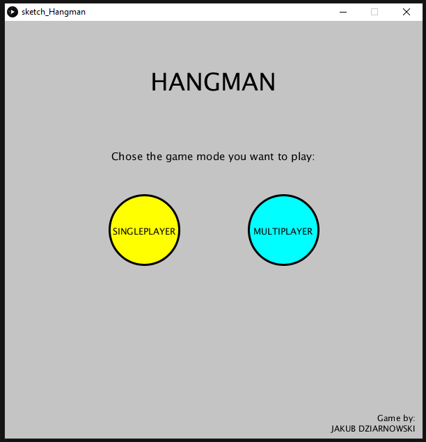
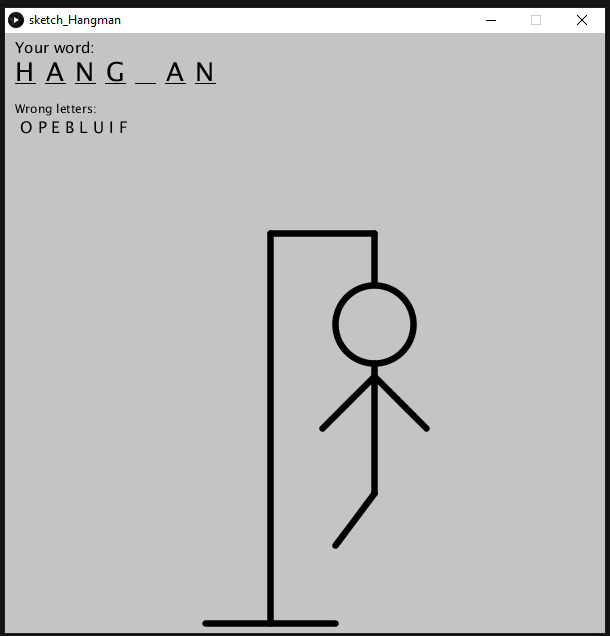
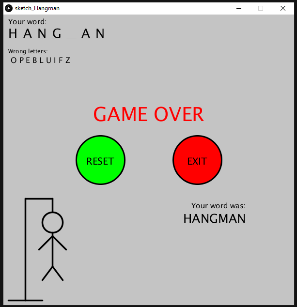

Jakub Dziarnowski I am a student at City, University of London. I'm from Wroclaw, Poland but currently
I live in London. I graduated high school with the International Baccalaureate programme (IB)
with Mathematics, Physics and English on a higher level. In my free time, I enjoy doing sports,
especially lacrosse which I have been practising for the last 5 years. |
||
|
|
||
Bootcamp 2020: Hangman game
This is my first Processing project summarizing the 2-week Programming Bootcamp at City University (2020).
The program, to run properly uses multiple Processing tools like classes, loops, conditions, methods and randomness.
This game has the option to be played by one person or two - this can be chosen after the start of the program
by choosing a correct button. Choosing a singleplayer mode will randomly choose the guessing word from the
provided text file and start a game. Multiplayer mode will first allow you to input the word that later
will be guessed by another player. It is submitted by clicking enter. Check out my code on Github: github.com/DziarnowskiJ/adbs990 |
||
|    | ||